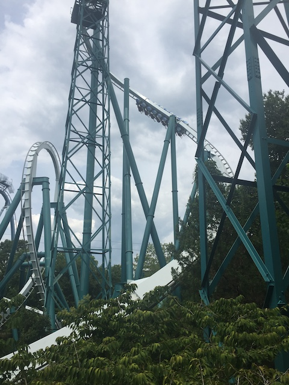
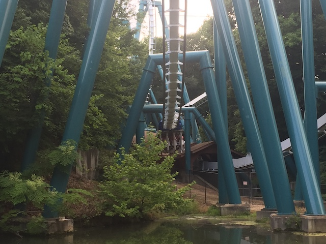
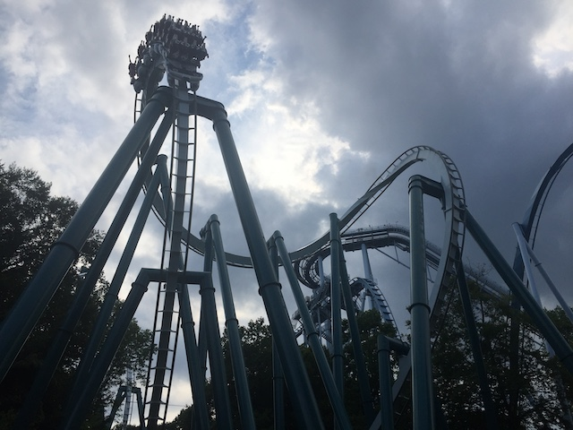
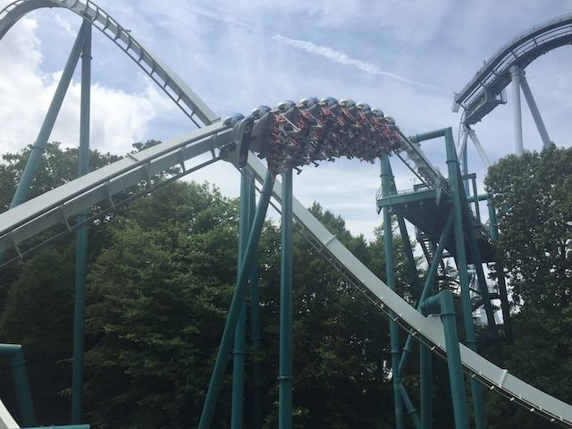
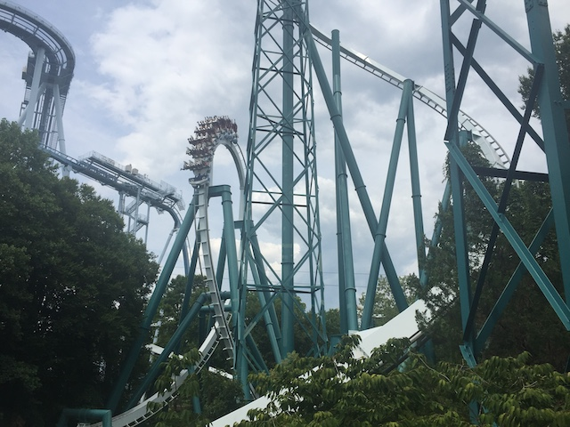
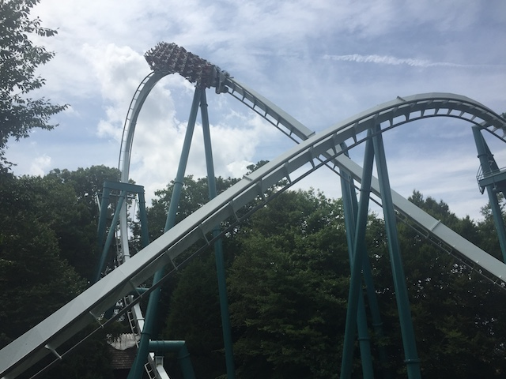

| |
Alpengeist Review

We're here at Busch Gardens Williamsburg to ride Alpengeist. The parks B&M Inverted Coaster. And....this is good! Really good! While not quite as good as the B&M Invert at the other Busch Gardens (Montu is so good!), this still is one of the best Inverts that B&M has made, and my personal favorite coaster in the park. I know people complain that this ride is trimmed to death. Well, that certainly wasn't the case when I rode it. All right. Let's get in the cars, pull down the restraints, and off you go. The entire ride is themed to a runaway ski-lift. So it naturally makes sense for it to be an inverted coaster. Very clever. Well anyways, let the ride begin! We start climbing up a MASSIVE lifthill. Honestly, I think this might be the biggest B&M Invert ever (Yep. I was correct). Look around, you'll see all sorts of great views, particuarly of Griffon, Loch Ness Monster, and just the surrounding area of Busch Gardens Williamsburg. We then dip down, and go through the spiral drop. Now, this isn't just your standard B&M Spiral drop where you get turned around 180 degrees and drop down. No, this thing turns 270 degrees! Partially because its bigger than most B&Ms (excluding Hypers, Gigas, & Dive Machines). But also, it's just a big more twisted and sharper than other B&M Curved Drops. I know I like the trend of more straight drops, but....this was really good. And because this is their biggest Inverted Coaster, this thing gains A LOT of speed. Yeah. This ride is FAST!!! And then this ride heads into...an immelmann? Yeah. This ride shakes things up a bit. Doesn't have the standard cliche formula that so many B&Ms follow. Nice to see them lead with an Immelmann for a change. Of course, it's big, flips you upsidedown, come out of it, still roaring as fast as before. We then go through the vertical loop. And....it's really good. Very fast, very strong, and great for this ride. We burst through a small little tunnel "TAKE THE TUNNEL!!!", before heading up into the cobra roll. It's pretty big, but we go through it with no problems. Rise up, twist out of the cobra roll. Twist upsidedodwn again, and soar to the ground. OK, it's no Raptor or Pyrenees, not as snappy as those rides. But it still just plows through, maintaining all its speed. We then head through a little bit of straight track (technically curved, but it feels straight), before curving up and into the midcourse brakes. Now, I've heard from other enthusiasts that these are BRUTAL and HARSH. However, that wasn't the case for me. So we're not losing all of our speed here. Though it's still a bit reduced. Head down another slightly curved drop to get some of our speed back. Pass through a tiny little shack, but you're out before you can scream the old as f*ck joke. Head up into a Heartline Spin, and again. Unique layout. I think this is the only B&M to have its heartline spin after the midcourse brakes. It's much better before since...you're going faster and have more whip. OK, it's still got more whip than on something like Silver Bullet or Patriot. But it's still clear that it'd be stronger in the first half. Glide over white concrete that's supposed to be snow, before flipping into a corkscrew. Not the strongest corkscrew, but still pretty good. We then head into an upward helix, which tends to kill off our speed. Go through a couple turns, look over the "snow" (I love the theming at BGW, but this snow is as real as the stuff at a Golf'N'Stuff), and see some fake missing shoes. I like that. And then glide right into the brake run. Yeah. This ride kicks ass! Definately one of the stronger B&M Inverts, and....during the first half, this ride just doesn't let up. It just soars through everything really quickly. And even in the second half, it's not as slow as some people make it out to be. My personal favorite coaster at Busch Gardens Williamsburg (For now), and yeah. Make sure you get on this thing when visiting the park.
8/10
Location: Busch Gardens Williamsburg
Opened: 1997
Built by: B&M
Last Ridden: July 26, 2019
Alpengeist Photos






Home
|